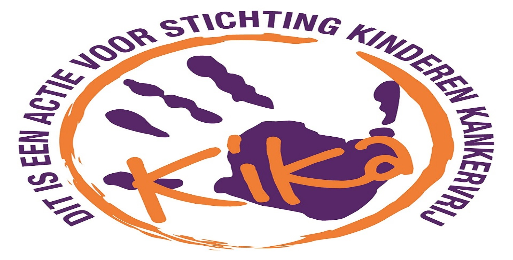
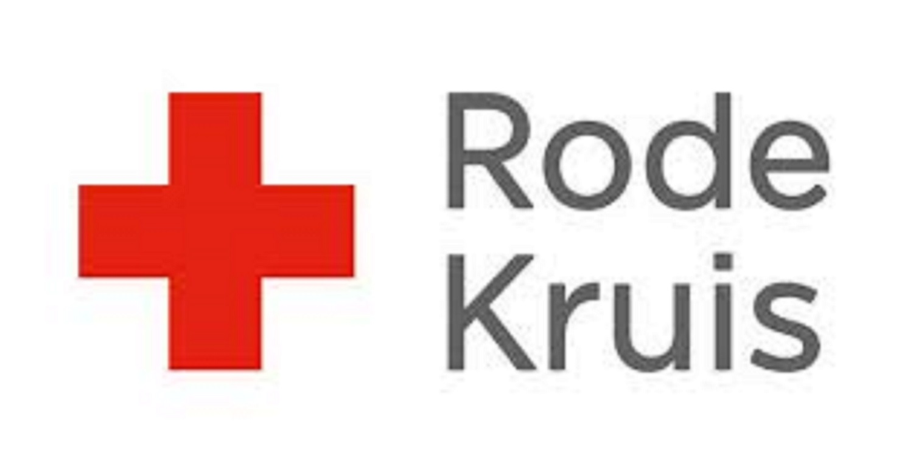
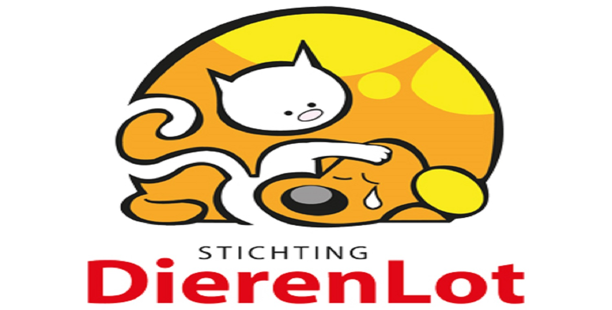

Kika

Wij steunen het goeden doel kika omdat wij mee willen helpen om het kinder kanker tegen te stijden.
Hoe u ook mee kan stuinen is door onze energy te kopen.
Bij elke 25 blikjes dei gekocht worden gaat er 3 procent daarvan naar kika.
KiKa werft fondsen voor vernieuwend onderzoek en andere activiteiten op het gebied van kinderkanker, gericht op minder pijn tijdens behandelingen, meer genezing en een hogere kwaliteit van leven op latere leeftijd. Daarnaast richt
KiKa zich op het geven van voorlichting over kinderkanker.
Rode kruis

Wij steunen het goeden doel rode kruis omdat wij mee willen helpen omarmoede te stijden.
Hoe u ook mee kan stuinen is door onze energy te kopen.
Bij elke 25 blikjes dei gekocht worden gaat er 3 procent daarvan naar rode kruis.
Het Rode Kruis helpt mensen tijdens noodsituaties. En we zorgen ervoor dat jij jezelf en anderen kunt helpen. ... Districten en afdelingen van het Rode Kruis organiseren in heel Nederland verschillende lokale activiteiten. Hiermee
leren we mensen hoe ze noodsituaties voorkomen en de gevolgen ervan verkleinen.
Dierenlot

Wij steunen het goeden doel kika omdat wij mee willen helpen om verlaten/verwonde dieren een thuis te geven.
Hoe u ook mee kan stuinen is door onze energy te kopen.
Bij elke 25 blikjes dei gekocht worden gaat er 3 procent daarvan
naar dierenlot.
Stichting DierenLot is een stichting die dierenhulp biedt en trekt zich het lot van deze dieren erg aan en wil hen dan ook graag helpen. U kunt: donateur worden en zelf in actie komen voor de dieren.